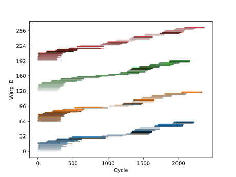
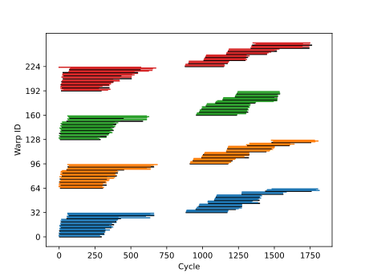
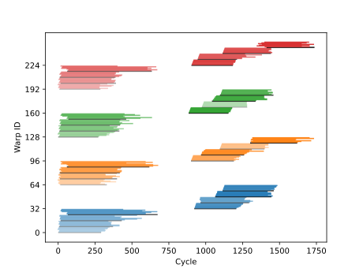
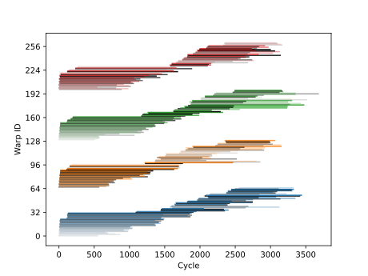

This directory contains some scripts for experimentally measuring memory latency, and for estimating memory throughput bounds.
Each kernel contains timing instructions for experimentally measuring memory access latency. Each warp records the start time immediately before the instruction and afterwards. These times are obtained using the SM clock. Since each SM has a different clock, we adjust the start times so that the warp with the lowest start time gets set to zero for each SM. We also record the block IDs and warp IDs that get executed on a given SM.
In the figures below, each line represents a warp. The length of a line is the measured latency in clock cycles taken to execute the instructions. The colors show what SM each warp executes on. The colors for SMs 1-4 are: blue, orange, green, red. Blocks are represented by different shades, and the first warp in a block is colored black.
In these experiments, we load a variable number of floating point values per thread and measure the global memory access latency. The amount of data each thread loads is listed below. * float : load a single value. * float4 : load four floating point values using a vectorized load instruction.
|  |  |  |
|---|---|---|
| 2 Warps per block | 4 Warps per block | 8 Warps per block |
Global memory access latency per warp when loading one floating-point value per thread
|  | |
|
|---|---|---|
| 2 Warps per block | 4 Warps per block | 8 Warps per block |
Global memory access latency per warp when loading one floating-point value per thread